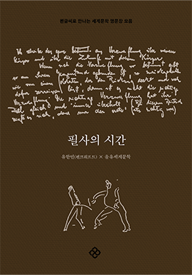
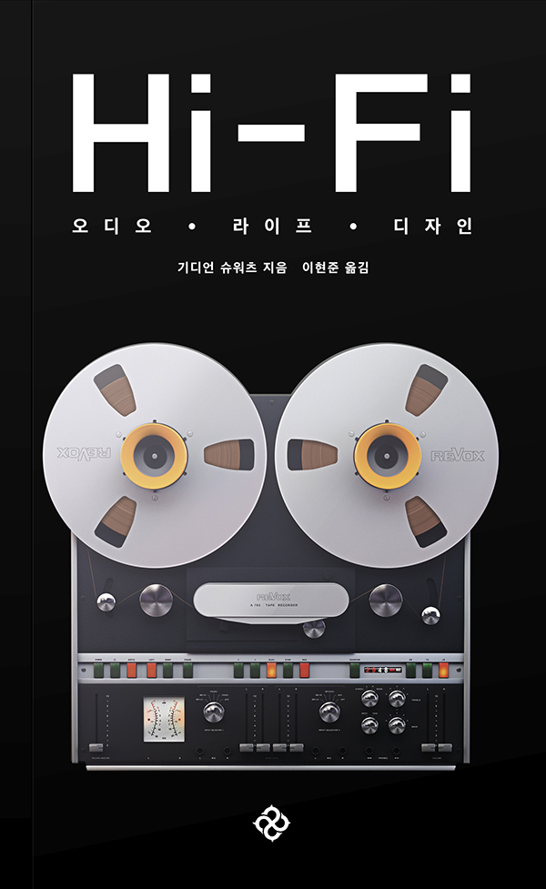
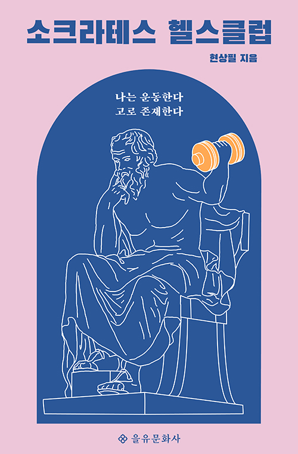

EULYOO PUBLISHING
이달의
도서
을유문화사에서
발간된 도서목록입니다.
-

밤은 부드러워, 마셔
한은형“나의 밤을 나누고픈 사람에게 종알대는 느낌으로” 이 글들을 썼다고 고백하는 작가의 사소한 일상을 들려준다. “술을 마시면 감정이 무르익는다. 나는 술을 마시고 고조된 감정을 이야기에 넣는다. 맨정신일 때 내가 쓴 이야기는 멍청하기 짝이 없다.” 술꾼으로 유명했던 스콧 피츠제럴드가 생전에 한 말이다. 알코올홀릭답게 그의 소설 속에도 술 이야기가 가득하다.
-

필사의 시간
유한빈(펜크래프트)이 책은 을유세계문학전집의 출간 순서에 준해 작품 및 문장을 배치한 펜글씨 연습 책으로 도서 목록의 기능도 겸한 것이 특징이다. 필사 문장, 작품 소개, 작가 소개로 구성되어 있으며 엄선한 50문장을 모두 소개한 다음 부록으로 ‘필수 글자 따라 쓰기’를 별도로 수록하고 있어 초보자도 쉽게 글씨체를 연습할 수 있도록 배려했다.
-

오디오·라이프·디자인
기디언 슈워츠 ,이현준팬데믹으로 집 안에서 보내는 시간이 늘어남에 따라, 과거 LP를 직접 경험한 세대뿐 아니라 레트로 유행을 이끄는 MZ세대 사이에서 턴테이블과 LP가 다시 인기를 얻고 있다. 작년 온라인에서 턴테이블 매출이 전년 대비 30퍼센트나 증가하고, LP 판매량은 무려 70퍼센트 이상 뛰었다는 기사들은 세대를 불문하고 팬데믹 시대를 살아가는 사람들의 생활상을 단적으로 보여 준다.
-

소크라테스 헬스클럽
현상필우리는 액션 어드벤처 게임이나 슈퍼 히어로 영화 속에서 오디세우스와 헤라클레스, 아킬레우스 같은 고대 그리스 영웅의 모습을 발견하곤 한다. 현대에 다시 부활한 이들 그리스 영웅의 모습에 주목한 이 책은 ‘신체 단련’이 지닌 미덕을 탐구하는데, 그 소재가 남다르다.
월간 을터뷰
을유문화사에서 만난 사람들의 이야기
EULYOO PUBLISHING EULYOO PUBLISHING EULYOO PUBLISHING EULYOO PUBLISHING-

건축가 유현준
30여 년 동안 건축 공부를 하면서 가장 인상 깊었던 건축물들, 그다음에 제게 많은 깨달음을 주었던 건축물들만 모아서 여러분께 소개해 드리는 책입니다.
Read More -
오디오 평론가 이현준
요즘 시대는 짧은 시간 동안 많은 돈을 버는 사람들을 추앙하는 시대잖아요. 평생 동안 자신의 일에 투자하는 사람이 정말 멋지다고 생각해요.
Read More -
한국외대 교수 신정환
근대인의 눈에 보이지 않는 심층의 세계를 찾는 주인공, 그래서 자신이 처한 환경을 극복하고 ‘유일무이’한 내가 되겠다고 하는 마음, 그것이 바로 돈키호테죠.
Read More